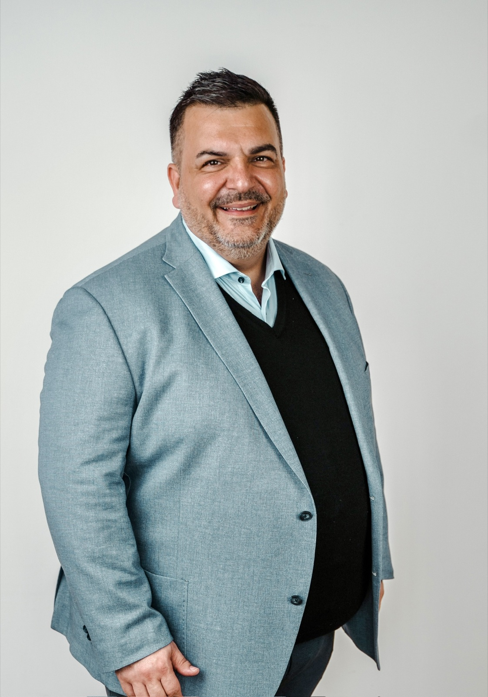
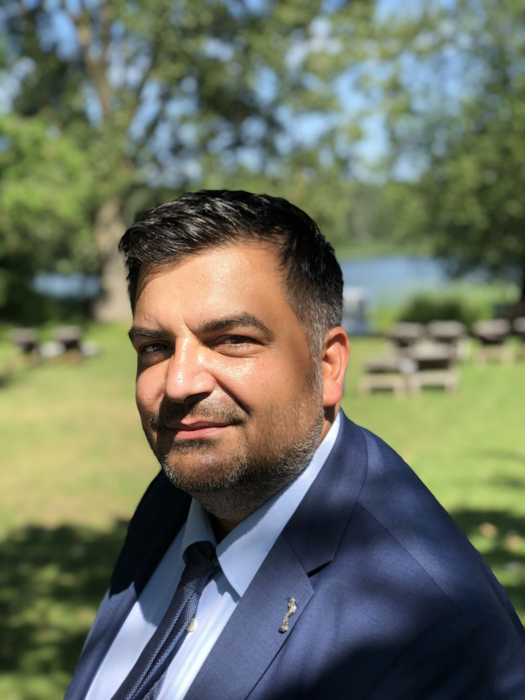

Zuhause
In Urbar verwurzelt
Hier lebe ich mit meiner Familie. Hier kenne ich die Menschen und die Themen, die sie bewegen.
Familienmensch · Unternehmer · Kommunalpolitiker
Mit Tatkraft, klaren Positionen und einem offenen Ohr für unsere Heimat. Gute Veränderungen beginnen im Kleinen: Schritt für Schritt und Projekt für Projekt.

Über mich
Ich bin Marco Pusceddu: Familienvater, Unternehmer und Kommunalpolitiker. Urbar ist mein Zuhause und genau hier möchte ich etwas bewegen.
Beruflich verbinde ich unternehmerische Verantwortung mit technischem Fachwissen. Politisch zählt für mich, was im Alltag funktioniert: zuhören, entscheiden und verlässlich dranbleiben.
Zuhause
Hier lebe ich mit meiner Familie. Hier kenne ich die Menschen und die Themen, die sie bewegen.
Beruf
Geschäftsführer, Diplom-Ingenieur für Weinbau und Önologie sowie Betriebswirt (VWA).
Haltung
Klar in der Sache, offen im Gespräch und nah an den Menschen.
Mein Engagement
Urbar
Nah an den Themen, die unseren Alltag bestimmen. Zuhören, abwägen und Entscheidungen treffen, die Urbar voranbringen.
Vallendar
Über Ortsgrenzen hinweg gemeinsam gestalten: verlässlich, lösungsorientiert und mit Blick auf das Machbare.

„Ich glaube an ehrliche Gespräche und daran, dass Veränderung im Kleinen beginnt.“
Marco Pusceddu
Aktuelles
Hier schreibe ich über Themen, die mich in Urbar und Vallendar beschäftigen.
Alle Beiträge ansehenEine realitätsnahe Übung zeigte, wie Ausbildung, Zusammenarbeit und moderne Technik im Ernstfall ineinandergreifen.
Beitrag lesenWeitere Beiträge
Zum vollständigen ArchivVier Wohnungen bleiben möglich. Die zusätzliche Verdichtung auf sechs Wohnungen haben wir nicht mitgetragen.
Beitrag lesenBund und Land bestellen. Fehlt das Geld, zahlen am Ende die Kommunen und ihre Bürger.
Beitrag lesenEin Workshop allein schützt niemanden. Aus den Vorschlägen müssen konkrete Maßnahmen werden.
Beitrag lesenKontakt
Sie haben eine Idee, eine Frage oder ein konkretes Anliegen aus Urbar oder Vallendar? Schreiben Sie mir. Ich freue mich auf den Austausch.